Thank you for choosing us, and welcome to our Kitty Says game.
In this game, a kitty will instruct you to remember and recall a sequence of colors.
This study is part of a research project conducted
by the Computational Principles of Intelligence Group
at the Max Planck Institute for Biological Cybernetics in Tuebingen, Germany, below is a picture of the town.
This is a memory game where you need to remember a sequence of colors and recall them.
To be eligible to participate, you MUST meet the following criteria:
You are a fluent speaker of English.
You have not previously participated in this experiment.
You are not color blind.
Please use a device with a keyboard, and set the input language to English.
Please do not accept this task if you are using a touch screen device, it will not work!
Confidentiality
Your participation in this study will remain confidential.
Your Prolific ID will NOT be shared with anyone outside the research team.
Data protection
Your data will be anonymized and only used in the manner described in our data protection sheet,
available Here
(please do not fill out this sheet!).
The following text box summarizes the main points. Please read it carefully and provide consent below:
By selecting the consent option below,
you acknowledge that you fulfill all of the participation criteria
and you agree to your data being used as described.
Sorry, our system detected that your browser configuration does not support this experiment. Please try some other HITs. Thank you for your interest!
Instructions:
Please read this information carefully before deciding to proceed further.
Please turn off any music in the background, and make sure to pay attention.
Purpose: To study how people remember sequences.
What you will need to do: A kitty will show you a sequence of colors. You will be asked to press the corresponding key on the keyboard to recall the colors.
Time required: 40 minutes.
Compensation: You will receive compensation for your successful completion of the task.
Commitment: This is a hard task. But we trust you and believe that you will get better and better at it. For this purpose try to concentrate and take up the challenge!
Participation and withdrawal: Your participation in this study is completely voluntary and you may refuse to participate or you may choose to withdraw at any time without penalty or loss of benefits to which you are otherwise entitled.
Contact: If you have questions or concerns about your participation or payment, or want to request a summary of research findings, please contact the experimenter by sending an email to: cpilab@tuebingen.mpg.de
Agreement:
The nature and purpose of this research have been sufficiently explained and I agree to participate in this study.
I understand that I am free to withdraw at any time without incurring any penalty.
Please consent by clicking the button below to continue. Otherwise, please exit the study at this time.
Keyboard finger position:
Only the letters S, D, F, J, K, and L are valid key presses for our Kitty.
Place your hands on the keyboard as shown below. Use one finger for each key.
Please use your left hand to select the options S, D and F . Use your right hand to select J, K and L. For example, use your left ring finger for S, left middle finger for D, left index finger for F, your right index finger for J, right middle finger for K, and right ring finger for L.
Once you have comfortably positioned your fingers, please do not change them during the task.
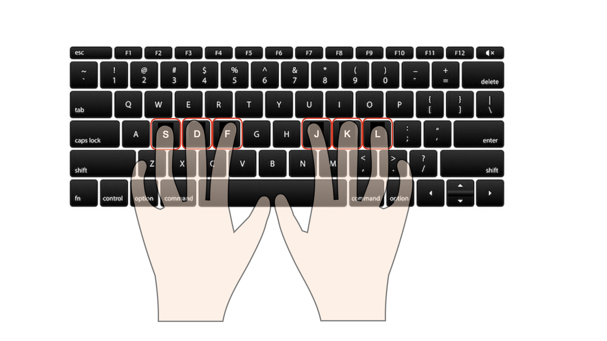
Keys and colors:
Below, you can see the colors that will be displayed by our Kitty in the experiment.
To select the leftmost color you can press S, to select the color next to it you can press D, and so forth.
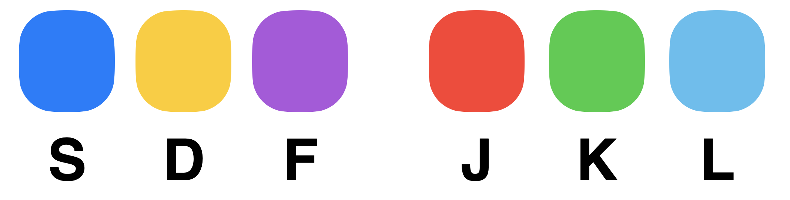
How one trial works:
On each trial, the kitty will show you a sequence of 12 colors by lighting up the color one after another.
The colors are displayed in groups of four. They are separated by a pause in between, marked by paws.
One example sequence is shown below.
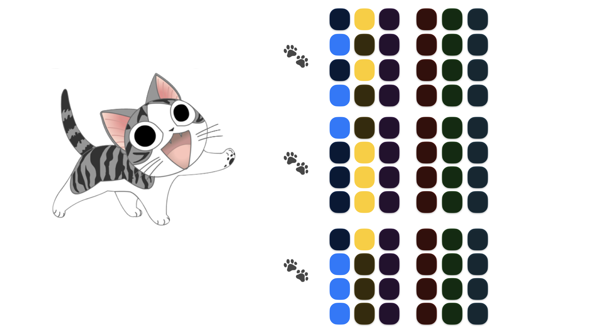
Try hard to remember all colors in the right order.
After the kitty is finished with showing you the colors, we ask you to recall the color sequence by pressing the keys corresponding to the colors sequentially.
After you are finished with recalling the sequence, you will see a score on how well you have done in this particular trial.
Your compensation will be calculated based on your performance in the task.
The performance is calculated using
Your total score, which is computed as the sum of the individual scores in each trial and
Your response times, i.e., how fast you were in responding.
On the next page you will try out an example.
Here is one example
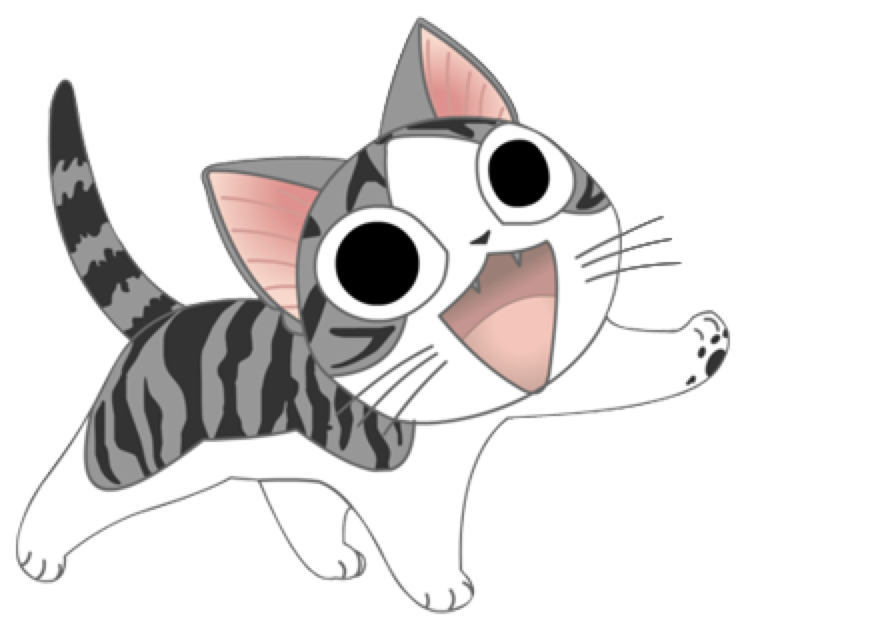
Your received 10 out of 10 in this trial.
You will only be directed to the next page if you manage to answer all of the questions correctly.
Number of trials left: 100
'
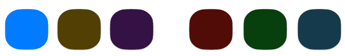
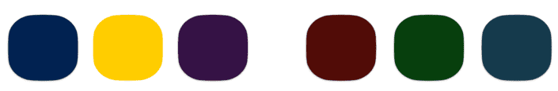
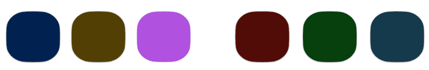
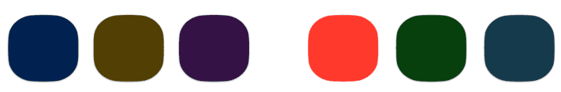
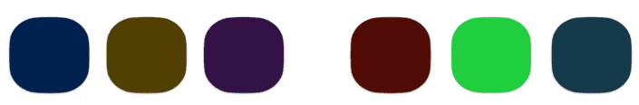
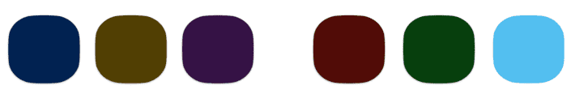
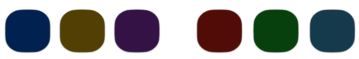
Number of trials left: 100
'
Try to remember what the kitty said and try to respond as FAST and ACCURATELY as possible.
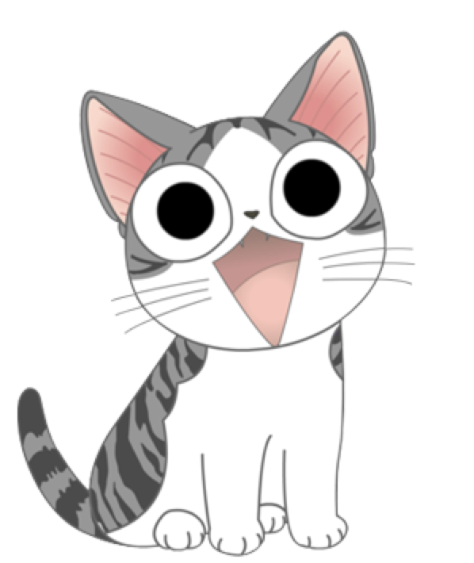
Are you feeling concentrated? Ready for the challenge?
Try to remember what the kitty said and try to respond as FAST and ACCURATELY as possible.
Your bonus is calculated based on your speed and accuracy.
Press Space Key to Start.
Your received 10 out of 10 in this trial.
Press Space Key to Continue.
Your received 10 out of 10 in this trial.
Press Space Key to Continue.
Congratulations, you have reached the end of this experiment!
Please tell us something about yourself.
Your performance and reward
We greatly appreciate your participation and contribution to our research.
Meanwhile, we hope that your brain becomes fitter after this workout.
Please leave this page after 5 minutes allow sufficient time for the data to be recorded, otherwise it might induce a loss of your compensation or bonuses due to connection issues.
Your Prolific Completion Code is: C159DZ6P
In case you have any questions, or would like to follow up on the findings, please contact us via our Prolific account or write an email to: cpilab@tuebingen.mpg.de